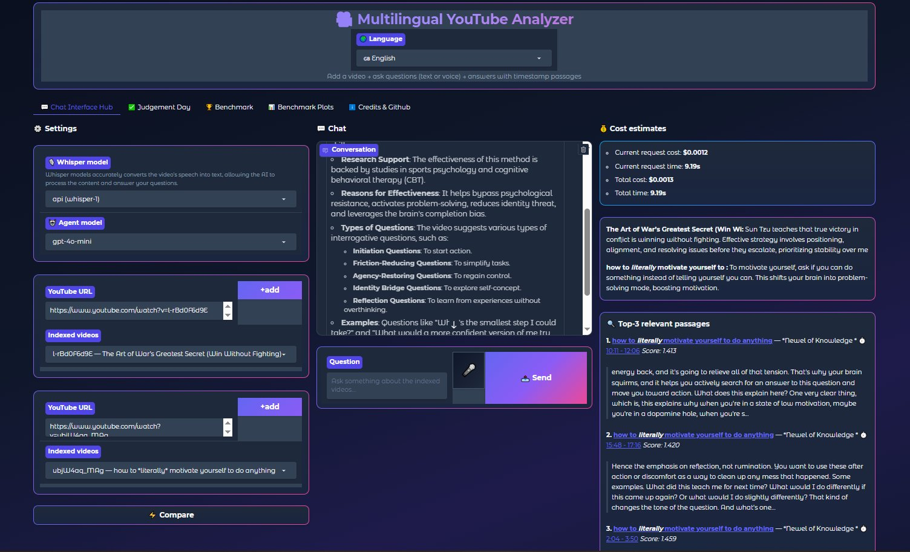

YouTube-Link einfügen, Frage tippen oder sprechen. Whisper schreibt das Video mit, ChromaDB findet die passenden Stellen, ein LangChain-Agent antwortet in der Sprache der Frage und verlinkt die Stelle im Video. Jede Einstellung ist mit einer eigenen Messreihe begründet, und unten steht ein echter Testlauf mit jeder einzelnen Antwort.
Paste a YouTube link, type or speak a question. Whisper transcribes the video, ChromaDB finds the matching passages, a LangChain agent answers in the language of the question and links the moment in the video. Every setting is backed by a benchmark of its own, and below is a real run with every single answer.

Echter TestlaufLive run
Der Lauf treibt das ausgelieferte Notebook von vorne bis hinten: Abschrift mit Whisper, Zerlegen, Einbetten, Agent mit Gedächtnis. Je Video stellt das Notebook acht Fragen aus den YouTube-Untertiteln, dazu kommen Fragen auf Deutsch an englische Videos, eine englische Frage an ein deutsches Video und eine Frage, deren Antwort im Video gar nicht vorkommt. Ein zweiter Modellaufruf prüft jede Antwort gegen die Untertitel.
The run drives the shipped notebook end to end: Whisper transcription, chunking, embedding, agent with memory. For each video the notebook generates eight questions from the YouTube captions; on top come German questions to English videos, an English question to a German video, and one question whose answer is not in the video at all. A second model call checks every answer against the captions.
…
Sieben MessreihenSeven benchmarks
Aus dem Abschlussprojekt des Ironhack-Bootcamps (April 2026): drei Videos von 5, 17 und 42 Minuten, sechs Whisper-Varianten, fünf Bitraten, drei Einbettungsmodelle, fünf Sprachmodelle, 294 Zerlegungen und 90 Kombinationen. Die grün hinterlegten Zeilen sind die Werte, mit denen der Analyzer heute läuft.
From the final project of the Ironhack bootcamp (April 2026): three videos of 5, 17 and 42 minutes, six Whisper variants, five bitrates, three embedding models, five language models, 294 chunkings and 90 combinations. Rows in green are the values the analyzer runs with today.
…
AufbauHow it works
GrenzenLimits